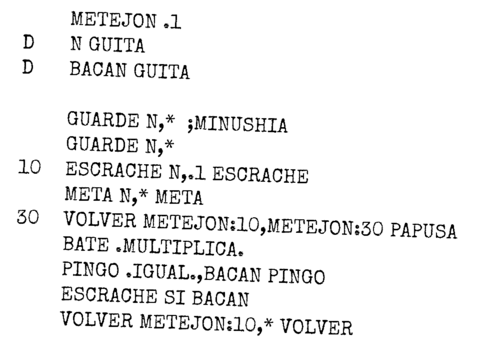
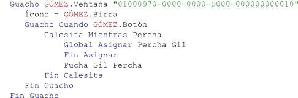
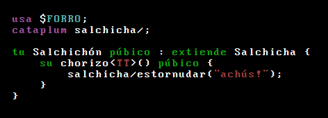

¿Qué es Qriollo?
Qriollo es un lenguaje de programación funcional, impuro, estricto, rioplatense y en joda.
El compilador de Qriollo está desarrollado en Haskell, tiene múltiples backends, y puede generar código C, código Python, y bytecode para la JVM. La implementación se encuentra en fase inestable/experimental y cuenta con una interfaz de funciones gringas.
Qriollo es un lenguaje estáticamente tipado, con inferencia de tipos, polimorfismo paramétrico y clases de tipos. Incorpora un sistema de módulos simple. Tiene las funcionalidades usuales de un lenguaje de programación de la familia de ML: tipos de datos algebraicos, análisis de casos por comparación de patrones, clausuras léxicas, optimización de invocaciones a la cola, referencias mutables y call/cc. El backend para C cuenta con un algoritmo de recolección de basura exacto y stop-and-copy.
Ejemplos
Elementos pares de una lista (para ejecutar interactivamente)
filtrar (la que dado x da x % 2# == 0#) [1#, 2#, 3#, 4#]
Calcular números primos (para compilar)
$ qr Primos.q --c -o Primos.c $ gcc -o Primos Primos.c -Wall $ ./Primos [2#, 3#, 5#, 7#, 11#, 13#, 17#, 19#, 23#, 29#, 31#, ...
Altura de un árbol binario
$ qr AB.q
3# Clases de tipos
$ qr ClasesDeTipos.q
[[2#, 4#, 6#], [8#, 10#, 12#], [14#, 16#, 18#]] Historia
Qriollo sigue una larga tradición de lenguajes rioplatenses:
CHORONGOL '67 – Juan Carlos Turing
Visual Gómez 1.0 – Simon Peyton Gómez
salchicha++ – el Yoni Backus y la turra Lovelace
Bajarlo
Prerrequisitos
Se requiere ghc (Glasgow Haskell Compiler) para compilar el compilador de Qriollo.
Instalación
- Descargar los fuentes de Qriollo:
- Compilar:
$ tar xzf Qriollo-0.91.tar.gz $ cd Qriollo-0.91/ $ make $ ./qr HolaMundo.q Hola mundo
Compilación a C
$ ./qr HolaMundo.q --c -o HolaMundo.c $ gcc -o HolaMundo HolaMundo.c -Wall $ ./HolaMundo Hola mundo
Compilación a Python (versión 2)
$ ./qr HolaMundo.q --py -o HolaMundo.py $ python2 HolaMundo.py Hola mundo
Compilación a la JVM
$ ./qr HolaMundo.q --jvm $ java -jar HolaMundo.jar Hola mundo
Manual
Índice
- Uso del intérprete y definición de valores simples (el...es...)
- Punto de entrada del programa (el programa...)
- Declaración y uso de funciones (el...dado...da...)
- Definición de los tipos de datos algebraicos (un...es...bien...)
- Declaración de funciones por análisis de casos (el...dado...da...dado...da...)
- Coincidencia de patrones (mirar...si...boludo)
- Guardas condicionales (dado...si...da...si no da...)
- Funciones anónimas (la que dado...da)
- Declaraciones locales (donde...boludo)
- Declaraciones locales (ponele que...en)
- Tipos y anotaciones de tipos (...de...)
- Polimorfismo
- Condiciones (si...da...si no da...)
- Declaración de operadores (chirimbolos)
- Clases de tipos (cualidad...para...boludo, encarnar...para...boludo)
- Continuaciones y call/cc (ccc, invocar)
- Mónadas y notación che (che...es...)
- Interfaz de funciones gringas (gringo ... y GRINGO...)
- Compilación condicional (pragma SI...BOLUDO)
- Módulos (entregar..., enchufar...)
- Caso de estudio: intérprete de Lizp
- Convenciones léxicas
- Recomendaciones de estilo
- Bichos y limitaciones conocidas
- Licencia
Uso del intérprete y definición de valores simples (el...es...)
Normalmente todos los programas en Qriollo los empezás importando el módulo Chamuyo, con la declaración "enchufar Chamuyo". El módulo Chamuyo es responsable de definir las primitivas del lenguaje y algunas funciones básicas.
Un programa Qriollo es una lista de declaraciones. La declaración más simple es la declaración de un valor, que vincula un nombre a un valor. Tiene la estructura "el <nombre> es <valor>". Una regla general es que las palabras reservadas te las acepta indistintamente en cualquier número y género: cualesquiera de las formas el, la, los o las le dan lo mismo, e igualmente le da lo mismo usar es o son:
Podés cargar las definiciones en modo interactivo pasando la opción -i al intérprete Qriollo:
$ qr DeclaracionValor.q -i qriollo> fruta "Manzana" de Texto qriollo> tres 3# de Numerito
El intérprete te indica el resultado, y también te indica su tipo (Texto en el caso de "Manzana" y Numerito en el caso de 3#).
Punto de entrada del programa (el programa...)
Para que podás ejecutar un programa independiente, o compilarlo, tenés que incluir un punto de entrada, que es la definición del valor programa. Verbigracia:
$ qr NumerosHasta.q
[1#, 2#, 3#, 4#, 5#, 6#, 7#, 8#, 9#, 10#] Declaración y uso de funciones (el...dado...da...)
Podés definir funciones directamente utilizando otra forma de definición: "la <función> dado <parámetros> da <resultado>". Igual que antes, podés escribir indistintamente dado, dada, dados o dadas, siempre prefiriendo la forma eufónica en contexto. Como es habitual en los lenguajes funcionales gringos, las funciones las definís al chimichurri y la aplicación de funciones la denotás con la yuxtaposición. La aplicación es asociativa a izquierda.
$ qr Doble.q -i qriollo> cuádruple 10# 40# de Numerito
Definición de los tipos de datos algebraicos (un...es...bien...)
Podés definir un tipo algebraico con la sintaxis:
bien <constructor> <tipos_parámetros>
...
bien <constructor> <tipos_parámetros>
Como siempre, podés usar cualquiera de los artículos un, una, unos o unas. Los tipos los podés poner parámetricos (por ejemplo "Árbol de Numerito"), en cuyo caso la sintaxis para que los declarés es:
bien <constructor> <tipos_parámetros>
...
bien <constructor> <tipos_parámetros>
Un ejemplo de un tipo algebraico que no tiene parámetros es:
Si levantás esta definición y evaluás la expresión Constante 10#, vas a obtener un error que te indica que el tipo Expresión no tiene la cualidad Mostrable, que le permite a Qriollo convertirlo en un texto para escupir:
$ qr DefExpresion.q -i qriollo> Constante 10# Se te escapó la tortuga. Esto no tipa ni en pedo. El tipo del argumento no coincide con el tipo esperado por la función. No hay una instancia declarada para Mostrable para Expresión
Pero podés cargar el archivo y preguntarle cuál es el tipo de una expresión, anteponiendo :t como sigue:
$ qr DefExpresion.q -i qriollo> :t Constante de Numerito en Expresión qriollo> :t Constante 10# de Expresión qriollo> :t Sumar de Expresión en Expresión en Expresión qriollo> :t Sumar (Constante 10#) de Expresión en Expresión qriollo> :t Sumar (Constante 10#) (Constante 10#) de Expresión
Un ejemplo de tipo algebraico con parámetros es:
Las variables de tipo que Qriollo no instancia durante el proceso de inferencia te las muestra como ?<numerito>.
$ qr DefArbol.q -i qriollo> :t Hoja de ?1415 en Árbol de ?1416 ?1415 qriollo> :t Hoja 10# de Árbol de ?1416 Numerito qriollo> :t Nodo 'a' (Hoja 10#) de (Árbol de Letra Numerito) en Árbol de Letra Numerito qriollo> :t Nodo 'a' (Hoja 10#) (Hoja 10#) de Árbol de Letra Numerito
Declaración de funciones por análisis de casos (el...dado...da...dado...da...)
Las funciones las podés definir por casos haciendo comparación de patrones, utilizando la sintaxis:
dados <patrones> da <resultado>
...
dados <patrones> da <resultado>
<patrones> debe ser una lista de patrones, uno por cada parámetro que la función espera. Cada patrón puede ser un comodín (que lo escribís con un guión bajo "_"), una variable (un nombre que lo podés vincular a cualquier valor), o una aplicación de un constructor a una lista de patrones.
Ponele, la suma de los valores que están en los nodos de un árbol como el de arriba la podés definir como sigue:
$ qr SumaArbol -i qriollo> suma_de_los_nodos (Nodo 1# (Hoja 2#) (Hoja 3#)) 6# de Numerito
Podés hacer comparación de patrones con constantes (letras, numeritos), tipos algebraicos nativos qriollos (tuplas, listas), y constructores de tipos de datos algebraicos. El patrón "_" (guión bajo) representa un comodín que puede coincidir con cualquier estructura que recibás, y no le da valor a ningún nombre. El mismo nombre no lo podés meter dos veces en un patrón. El análisis de casos tiene que ser exhaustivo. Los patrones los podés anidar a una profundidad arbitraria. Si el patrón no es atómico lo tenés que encerrar entre paréntesis.
Ejemplo de tipos de datos algebraicos existentes:
$ qr PatPosta -i qriollo> conj (neg No) (neg No) Sí de Posta
Ejemplo de patrones anidados con tuplas y numeritos:
$ qr PatTupla -i qriollo> máximo_común_divisor (100#, 60#) 20# de Numerito
Tené re en cuenta que si querés definir esta función de manera bien qriolla tenés que usar su variante al chimichurri, recibiendo dos parámetros de tipo Numerito en vez de un solo parámetro de tipo (Numerito, Numerito).
Ejemplo de patrones con dos listas:
$ qr PatLista -i qriollo> emparejar [1#, 2#, 3#] ['a', 'b', 'c'] [(1#, 'a'), (2#, 'b'), (3#, 'c')] de [(Numerito, Letra)]
Coincidencia de patrones (mirar...si...boludo)
Y si no, podés usar una expresión mirar...boludo para hacer análisis de casos por comparación de patrones. A diferencia de la construcción anterior, en la que la comparación de patrones es parte de la sintaxis de una definición de función, mirar...boludo es una expresión que (como cualquier expresión) la podés usar para formar expresiones más grandes, y no hace falta que introduzcás una definición:
si <patrón> da <resultado>
...
si <patrón> da <resultado>
[si no da <resultado>]
boludo
La cláusula "si no" la podés meter si querés, y si no querés no, y representa el resultado predeterminado por omisión de analizar los casos. Igual que cuando definís funciones por análisis de casos, la cobertura de los casos la tenés que hacer exhaustiva.
En lo que refiere al resaltado de sintaxis, todas las palabras clave que te las resalta en verde sirven para marcar que empieza una estructura que la tenés que cerrar con un correspondiente boludo (o boluda). Excepto, claro está, en el caso de la palabra clave boludo, que no requiere que pongás un boludo posterior.
Ejemplo de análisis de casos con constantes:
$ qr MirarDigitos -i qriollo> escupir_dígito 3# tres () de ()
Fijate que la función escupir_dígito definida arriba te devuelve el valor () de tipo (), que corresponde a la tupla 0-aria o al valor unit tradicional en lenguajes funcionales gringos, pero además tiene el efecto colateral de escupirte el texto "tres" en la salida estándar.
Ejemplo de análisis de casos con patrones anidados:
Determinar el mínimo de una lista.
$ qr MirarMinimo -i qriollo> mínimo [10#, 9#, 8#, 7#, 11#, 12#] 7# de Numerito
Una manera más qriolla de definir esta función te la mostramos en los párrafos que siguen más abajo, usando guardas condicionales.
Guardas condicionales (dado...si...da...si no da...)
Cuando usás una cláusula dado...da... de las que forman parte de las definiciones de funciones por análisis de casos, podés meter una secuencia de guardas condicionales:
si <condición> da <resultado>
...
si <condición> da <resultado>
si no da <resultado>
Fijate que en este caso el "si no" lo tenés que poner sí o sí.
Ponele, si querés determinar el mínimo de una lista:
Nota: una vez que la expresión a evaluar la comparó exitosamente con el patrón, Qriollo agarra esa rama, a diferencia de lo que pasa en otros lenguajes gringos como Haskell. Las condiciones adentro de una cláusula dado...si...da...si no...da las evalúa secuencialmente.
Funciones anónimas (la que dado...da)
Podés declarar funciones anónimas mediante la expresión:
La construcción te acepta varios parámetros:
Y más en general te acepta que pongás un análisis de casos con guardas condicionales como cualquier función:
dados <parámetros> da <resultado>
...
dados <parámetros> da <resultado>
Ponele:
$ qr Anonimas1 -i qriollo> aplicarL 2# 1# [3#, 5#, 7#] de [Numerito]
$ qr Anonimas2 -i qriollo> conjetura_de_Collatz 3# [3#, 10#, 5#, 16#, 8#, 4#, 2#, 1#] de [Numerito]
Declaraciones locales (donde...boludo)
Cada cláusula dado...da..., igual que su variante con guardas condicionales, te acepta que metás una secuencia de declaraciones locales:
donde
<declaración>
...
<declaración>
boludo
Cada una de ellas es una declaración de un valor simple (el <nombre> es <valor>) o de una función (la <función> dados <patrones> da <resultado>), posiblemente con guardas condicionales, y posiblemente también con declaraciones locales anidadas. Como Qriollo usa evaluación estricta, los valores que le diste a cada una de las declaraciones locales las evalúa antes de evaluar el cuerpo (resultado).
Ejemplo:
Escribir un número natural n en base b:
$ qr Base -i qriollo> en_base 2# 999999# [1#, 1#, 1#, 1#, 0#, 1#, 0#, 0#, 0#, 0#, 1#, 0#, 0#, 0#, 1#, 1#, 1#, 1#, 1#, 1#] de [Numerito]
Las declaraciones que las introducís con una cláusula donde...boludo las podés hacer recursivas y mutuamente recursivas.
Declaraciones locales (ponele que...en)
También podés introducir declaraciones locales como expresiones, igual que como en el letrec gringo:
<declaración>
...
<declaración>
en
<cuerpo>
Ponele, el algoritmo para incorpordenar una lista:
$ qr Incorpordenar -i
[0#, 1#, 1#, 5#, 18#, 18#, 24#, 25#, 30#, 36#, 47#,
54#, 63#, 70#, 73#, 78#, 86#, 95#, 96#, 96#] Tipos y anotaciones de tipos (...de...)
Qriollo tiene tipos básicos ya predefinidos en el lenguaje (Posta, Numerito, Letra, etc.), y tipos definidos por vos. Por ahora no tiene un mecanismo implementado para definir alias (o renombres) de tipos.
En todas las definiciones de valores ("el <nombre> es ...") y de funciones ("la <función> dado ...") podés declarar explícitamente sus tipos, escribiendo, respectivamente "el <nombre> de <tipo> es ..." y "la <función> de <tipo> dado ...".
El tipo de las funciones
El tipo de las funciones es el tipo más importante en un lenguaje funcional como Qriollo. Si fulano es un tipo y mengano es otro tipo, entonces (fulano en mengano) es el tipo de las funciones que reciben fulanos y devuelven menganos. El constructor infijo binario en es asociativo a derecha, como siempre pasa en los lenguajes funcionales gringos, y de esta manera "coso en coso en coso en coso" es el mismo tipo que "coso en (coso en (coso en coso))".
El tipo Posta
Tiene dos constructores: Sí y No. La manera de usarlos es que les hagás análisis de casos por comparación de patrones, o que usés una estructura condicional, como vas a ver después.
Ponele:
$ qr Logica1 -i qriollo> o (neg Sí) (neg (y No Sí)) Sí de Posta
El tipo Numerito
Tiene 232 constructores, que los notás 0#, 1#, 2#, ..., 4294967295#. Ojo, la sintaxis sin el cardinal (0, 1, 2, ...) está reservada para representar valores genéricos de tipos de datos que encarnen la cualidad Digital, o sea que tengan una operación para transformar un número natural cualquiera en un elemento del tipo. Como caso particular, el tipo de datos Numerito encarna la cualidad Digital, lo que permite que escribás 0 para representar el numerito 0#, 1 para representar el numerito 1#, y así sucesivamente.
Qriollo por el momento no tiene soporte léxico para que escribás constantes numéricas de ninguna manera alternativa, como por ejemplo, constantes numéricas en distintas bases de numeración.
Los numeritos los podés usar haciendo análisis de casos con sus valores comparandolós con patrones, o mediante los operadores aritméticos y relacionales:
| -Expresión- | -Resultado- | -Significado- |
| 10# + 3# | => 13# | suma |
| 10# - 3# | => 7# | resta |
| 10# * 3# | => 30# | producto |
| 10# / 3# | => 3# | división entera |
| 10# % 3# | => 1# | resto en la división |
| 10# ** 3# | => 1000# | potencia |
| 10# & 3# | => 2# | "y" bit a bit |
| 10# | 3# | => 11# | "o" bit a bit |
| 10# ^ 3# | => 9# | "xor" bit a bit |
| 10# == 3# | => No | comparación por igual |
| 10# != 3# | => Sí | comparación por distinto |
| 10# < 3# | => No | comparación por menor |
| 10# > 3# | => Sí | comparación por mayor |
| 10# <= 3# | => No | comparación por menor o igual |
| 10# >= 3# | => Sí | comparación por mayor o igual |
| ~10# | => 4294967285# | complemento bit a bit |
Ponele:
$ qr Aritmetica -i qriollo> factorial 7# 5040# de Numerito qriollo> es_par (factorial 1#) No de Posta
El tipo Letra
Tiene un montón de constructores, tantos como códigos de punto Unicode. Los valores de tipo Letra son 'a', 'b', 'c', etcétera, donde el caracter Unicode lo metés encerrado entre dos comillas simples. Por ahora la única sintaxis léxica permitida para que ingresés constantes de tipo Letra es que las escribás literalmente en el archivo fuente de Qriollo, que Qriollo te lo presume codificado en UTF-8. Además, te soporta algunas secuencias de escape:
| -Escape- | -Código- | -Letra- |
| '\a' | 7 | campanita |
| '\b' | 8 | backspace |
| '\f' | 12 | salto de página |
| '\t' | 9 | tab |
| '\v' | 11 | tab vertical |
| '\n' | 10 | salto de línea |
| '\r' | 13 | retorno de carro |
| '\"' | 34 | comilla doble (") |
| '\'' | 39 | comilla simple (') |
| '\\' | 92 | contrabarra (\) |
El soporte para Unicode por ahora tiene algunos caprichos y limitaciones. Los caracteres los podés utilizar haciendo análisis de casos por comparación de patrones, y también mediante las funciones letra_a_numerito que convierte una letra en su código de punto Unicode, y numerito_a_letra que es la operación inversa.
Ponele:
$ qr Letras -i qriollo> siguiente_letra (siguiente_letra 'a') 'c' de Letra
El tipo Lista
Si fulano es un tipo, entonces [fulano] es el tipo de las listas que contienen fulanos. La sintaxis para literales de tipo lista es: [elemento1, elemento2, ..., elementon] . Podés no poner ningún elemento, y en ese caso te lo entiende como la lista vacía ( [] ). También te admite omitir o escribir la coma final. Ponele, [1#, 2#, 3#] y [1#, 2#, 3#,] son dos expresiones que representan la misma lista de numeritos. De hecho son dos maneras que tenés de escribir la misma expresión. Ponele:
$ qr InvertirLista -i qriollo> invertir [1#, 2#, 3#] [3#, 2#, 1#] de [Numerito]
Los tipos de las n-uplas
Qriollo tiene un tipo para las tuplas de n elementos, donde acá n puede ser 0 o un número natural mayor que 1. Si fulano1, fulano2, ..., y fulanon son tipos, entonces (fulano1, fulano2, ..., fulanon) es el tipo de las n-uplas cuyo i-ésimo elemento es de tipo fulanoi.
En el caso particular en el que n = 0, tenés el tipo unitario de las 0-uplas que lo escribís () y tenés un único valor también escrito (). El valor () lo podés usar de manera convencional como valor que devolvés cuando el que el resultado de un cómputo no importa, como cuando querés usar operaciones que tienen efectos colaterales. Ponele:
qriollo> escupir "Hola mundo\n"
Hola mundo
()
de () La operación escupir le das un texto y te lo escupe por la salida estándar. Además, devuelve el valor () que tiene tipo ().
La manera que tenés de usar las n-uplas es que hagás análisis de casos por comparación de patrones. Ponele:
$ qr SumarPares -i qriollo> sumar_pares (1#, 2#) (10#, 20#) (11#, 22#) de (Numerito, Numerito)
El tipo Texto
El tipo Texto te sirve para representar cadenas de texto, que son tiras de letras. El tipo Texto tiene un constructor solo que también se llama Texto, que le das una lista de letras y te devuelve un texto. La manera que tenés de usar los textos es que les hagás análisis de casos por comparación de patrones para acceder a la lista de letras que hay por abajo.
También si querés podés usar la sintaxis más común en los lenguajes gringos: un texto lo delimitás con una comilla doble (") a la izquierda y con otra a la derecha, y a todas las letras del medio las yuxtaponés para formar la lista de letras en cuestión. Las secuencias de escape que te reconoce son las mismas que las que ya dijimos en la sección que le corresponde al tipo Letra. Ponele:
- "cronopio" equivale a (Texto ['c', 'r', 'o', 'n', 'o', 'p', 'i', 'o']).
- "dije \"hola\"" equivale a (Texto ['d', 'i', 'j', 'e', ' ', '"', 'h', 'o', 'l', 'a', '"']).
- "\\\"" equivale a (Texto ['\\', '"']).
- "a\n" equivale a (Texto ['a', '\n']).
- "a\\n" equivale a (Texto ['a', '\\', 'n']).
- "" equivale a (Texto [])
Ponele:
$ qr MayusculizarTexto -i qriollo> mayusculizar_texto "hola" "Hola" de Texto
El tipo Quizá
Igual que otros lenguajes gringos, Qriollo te permite que extendás cualquier tipo que querás con un valor distinguido. Si coso es un tipo, Quizá de coso es otro tipo cuyos valores son Nada, y un montón de valores que se escriben (Este chabón), donde chabón puede ser cualquier valor del tipo coso. La manera de que usés el tipo Quizá de coso es que hagás análisis de casos por comparación de patrones. Ponele:
$ qr QuizaMinimo -i qriollo> mínimo [] Nada de Quizá de Numerito qriollo> mínimo [2#, 1#, 3#] (Este 1#) de Quizá de Numerito
El tipo Ref
Las variables en Qriollo no son cosas asignables: cuando una variable la asociaste a un valor, cagaste: la dejaste asociada a dicho valor para siempre. Por otro lado, los valores en Qriollo son inmutables, y eso quiere decir que no los podés modificar a lo largo del tiempo. La única excepción a esta regla es el tipo de las referencias, que te deja que introduzcás valores mutables de tal manera que vos los controlés.
Si fulano es un tipo, Ref de fulano es el tipo de las referencias mutables a valores de tipo fulano. El tipo de las referencias tiene un constructor que también se llama Ref, que le das un valor de tipo fulano y te devuelve una celda mutable que referencia ese valor. Si r es una referencia de tipo Ref de fulano, la podés usar de dos maneras: en primer lugar, si ponés la expresión desref r te devuelve el valor de tipo fulano que está siendo referenciado por la celda r. En segundo lugar, si x es cualquier valor de tipo fulano, con la expresión r := x mutás la celda r para que pase a referenciar el valor designado por x. La expresión r := x tiene un efecto colateral pero siempre te devuelve el mismo valor ().
Como una utilidad práctica que sirve para que podás definir programas con efectos colaterales, Qriollo te proporciona el operador punto y coma (";") que te sirve si querés componer dos expresiones secuencialmente: la expresión (<expresión1> ; <expresión2>) primero evalúa <expresión1> descartando su valor, y después evalúa <expresión2>.
Ejemplo básico de referencias:
qriollo> Ref 1# (Ref 1#) de Ref de Numerito qriollo> ponele que la x es Ref 1# en desref x 1# de Numerito qriollo> ponele que la x es Ref 1# en x := 5; desref x 5# de Numerito qriollo> ponele que la x es Ref 1# en x := desref x + 1#; desref x 2# de Numerito
Factorial iterativo usando referencias:
En este ejemplo definimos el factorial de un numerito n como un proceso iterativo que agarra e inicializa p e i como referencias a 1#, y en cada paso cambia sus valores para que referencien respectivamente el producto (desref p * desref i) y la suma (desref i + 1#).
$ qr Referencias1 -i qriollo> factorial_iterativo 5# 120# de Numerito
Evaluación diferida usando referencias:
En este ejemplo definimos dos funciones que implementan un protocolo de evaluación diferida: bancame agarra y recibe una función f de () en coso y te devuelve un valor de tipo Promesa de coso, que representa el cómputo de f (). La función dame le das una Promesa de coso y te devuelve el correspondiente coso. Una promesa p la representás con una referencia que inicialmente apunta a la función f. La primera vez que evaluás dame p te evalúa f () y se actualiza la promesa p para que apunte al resultado final de evaluar f (). Cuando te evalúa dame p las siguientes veces, Qriollo te devuelve el valor memorizado, sin volver a evaluar f () de nuevo.
$ qr Referencias2 -i qriollo> ponele que la p es bancame (la que dado () da escupir "hola\n"; 1# + 1#) en 7# 7# de Numerito qriollo> ponele que la p es bancame (la que dado () da escupir "hola\n"; 1# + 1#) en dame p hola 2# de Numerito qriollo> ponele que la p es bancame (la que dado () da escupir "hola\n"; 1# + 1#) en (dame p, dame p) hola (2#, 2#) de (Numerito, Numerito)
Fijate que en el primer caso la promesa no la utilizás de verdad, o sea que no te escupe el "hola" en pantalla. En el segundo caso, la promesa la utilizás una vez, o sea que sí te escupe el "hola" en pantalla y además te devuelve el valor prometido. En el tercer caso, la promesa la usás dos veces: la primera vez que forzás la promesa, para calcular la primera componente del par, te evalúa la función, escupiéndote el "hola" por pantalla, pero al momento de calcular la segunda componente del par el resultado 2# ya lo tiene memorizado, y te lo devuelve pero no te lo vuelve a calcular.
Igualdad de referencias
La comparación de referencias responde a su identidad como objetos, o sea, a la coincidencia de la locación de memoria a la que se refieren. Ponele:
$ qr -i qriollo> Ref 1# == Ref 1# No de Posta qriollo> ponele que la r es Ref 1# en r == r Sí de Posta
Polimorfismo
Los tipos pueden incluir variables de tipo, que las escribís con nombres empezados en minúscula. Esto te permite que definás valores cuyo tipo es polimórfico en dichas variables. Ponele:
$ qr Polimorfismo -i qriollo> composición numerito_a_letra letra_a_numerito 'a' 'a' de Letra qriollo> apl letra_a_numerito ['h', 'o', 'l', 'a'] [104#, 111#, 108#, 97#] de [Numerito] qriollo> vueltargar composición numerito_a_letra letra_a_numerito 97# 97# de Numerito
Cuando Qriollo encuentra un conjunto de definiciones de varios valores, que pueden ser, o no, mutuamente recursivos, ya sea en:
- una expresión: ponele que <definiciones> en <cuerpo>,
- una cláusula: <cuerpo> donde <definiciones> boludo,
- la lista de definiciones que conforman un programa,
si las definiciones no las acompañás de una declaración de tipos, se portan de manera polimórfica en el cuerpo, pero monomórfica en todos los usos que están al mismo nivel. Ponele, el uso de identidad1 falla, porque acá estás tratando de usar una función que no viene acompañada de una declaración de tipos de manera polimórfica (con un argumento de tipo Posta y otro de tipo Letra) por una definición que está al mismo nivel:
$ qr IdPolimorfica1 Se te escapó la tortuga. Esto no tipa ni en pedo. El tipo del argumento no coincide con el tipo esperado por la función. No unifican los tipos. Letra en ?1479 Posta en Posta
En cambio, el uso de identidad2 funciona, porque acá lo estás usando de manera polimórfica adentro del cuerpo del donde...boludo:
$ qr IdPolimorfica2 -i qriollo> programa (Sí, 'a') de (Posta, Letra)
El uso de identidad3 también es correcto, porque la función la acompañás de una declaración de tipos que la declara como polimórfica:
$ qr IdPolimorfica3 -i qriollo> programa (Sí, 'a') de (Posta, Letra)
Condiciones (si...da...si no da...)
Podés usar expresiones condicionales, por medio de la sintaxis:
...
si <condición> da <resultado>
si no da <resultado>
Ponele:
$ qr Condicionales
hola
chau
hola
chau
chau
chau
chau
chau Declaración de operadores (chirimbolos)
Podés extender la sintaxis qriollo declarando nuevos operadores. La declaración con la que incorporás un chirimbolo a la sintaxis es:
Las asociatividades posibles son tres: zurdo para un chirimbolo binario asociativo a izquierda, diestro para un chirimbolo binario asociativo a derecha y prefijo para un chirimbolo unario prefijo. La precedencia es un numerito. Los operadores de mayor precedencia Qriollo los aplica sobre sus operandos antes que los operadores de menor precedencia. Un mismo chirimbolo no lo podés declarar más de una vez, así que no es posible sobrecargar un mismo chirimbolo para que sea unario y binario. Esto es diferente de lo que sí podés hacer en otros lenguajes gringos con chirimbolos como el menos "-".
El nombre de un chirimbolo puede ser cualquier tira de letras que estén entre las siguientes:
! # $ % & * + . / < = > ? @ : ^ | - ~ \ ; `
Si el nombre de un chirimbolo termina en dos puntos (":"), Qriollo lo entiende como que se trata del nombre de un constructor. La extensión de la sintaxis con nuevos chirimbolos es independiente del valor que les des. El valor de un chirimbolo se define igual que el de cualquier otro nombre.
Los chirimbolos los podés usar como funciones usando la sintaxis (el <chirimbolo>) o equivalentemente (la <chirimbolo>). Los paréntesis son obligatorios en ese caso.
$ qr Chirimbolo1 -i qriollo> 1# <@> 2# <@> 3# <@> 4# (((1#, 2#), 3#), 4#) de (((Numerito, Numerito), Numerito), Numerito) qriollo> 1# <$> 2# <$> 3# <$> 4# ([1#], [([2#], [([3#], [4#])])]) de ([Numerito], [([Numerito], [([Numerito], [Numerito])])]) qriollo> 1# <$> 2# <@> 3# <$> 4# (([1#], [2#]), ([3#], [4#])) de (([Numerito], [Numerito]), ([Numerito], [Numerito]))
$ qr Chirimbolo2 -i qriollo> \ \ \ 1# (((1#, 1#), (1#, 1#)), ((1#, 1#), (1#, 1#))) de (((Numerito, Numerito), (Numerito, Numerito)), ((Numerito, Numerito), (Numerito, Numerito))) qriollo> fap (el \) [1#, 2#, 3#] [(1#, 1#), (2#, 2#), (3#, 3#)] de [(Numerito, Numerito)]
$ qr Chirimbolo3 -i qriollo> (::'a' :+: ::'b') :+: (::'c' :+: ::'d') ((::'a' :+: ::'b') :+: (::'c' :+: ::'d')) de Árbol de Letra
Clases de tipos (cualidad...para...boludo, encarnar...para...boludo)
Qriollo te permite que definás cualidades, lo que en lenguajes gringos conocés como "clases de tipos". Una cualidad es un conjunto de declaraciones de métodos con sus tipos:
el <nombre_método> de <tipo>
...
el <nombre_método> de <tipo>
boludo
El nombre de la cualidad lo tenés que empezar con mayúscula. El tipo de cada uno de los métodos tiene que depender de la variable de tipo para la que declarás la cualidad.
Ponele, la siguiente declaración indica que un tipo coso encarna la cualidad Comparable si lo acompañás de un método comparar, que le das dos cosos y te devuelve una posta:
el comparar de coso en coso en Posta
boludo
Una vez que declaraste una cualidad, le podés decir de qué manera diferentes tipos concretos la encarnan, que en lenguajes gringos lo llamás "instancia":
<definición_método>
...
<definición_método>
boludo
Con las definiciones de los métodos le das valor a cada uno de los métodos presentes en la declaración de la cualidad correspondiente. Las cualidades solamente las podés encarnar para tipos concretos que vienen encabezados por un constructor de tipos. Si el constructor de tipos tiene parámetros, tienen que ser variables de tipos que pueden variar libremente.
Ponele, con la siguiente declaración indicás que el tipo Numerito encarna la cualidad Comparable y definís el método comparar como el operador de comparación por menor o igual ("<="):
el comparar es (el <=)
boludo
Si el tipo concreto depende de ciertas variables de tipos, podés exigir que esas variables encarnen a su vez otras cualidades para poder definir cómo el tipo encarna una cierta cualidad:
para <constructor_de_tipos> <var> ... <var>
con (<nombre_cualidad> para <var>,
<nombre_cualidad> para <var>,
...
<nombre_cualidad> para <var>)
<definición_método>
...
<definición_método>
boludo
En el caso en el que la encarnación dependa de que una sola variable encarne cierta cualidad, los paréntesis no hace falta que los pongás.
Ponele, las listas de cosas son comparables si las cosas son comparables:
con Comparable para coso
el comparar
dadas [] _ da Sí
dadas (_ : _) [] da No
dadas (x : xs) (y : ys) da
comparar x y && comparar xs ys
boludo
Todos los tipos los podés aumentar con una declaración de las cualidades que tienen que encarnar las variables de tipos que lo conforman:
con (<nombre_cualidad> para <var>,
<nombre_cualidad> para <var>,
...
<nombre_cualidad> para <var>)
En caso de que querás especificar una cualidad sola, los paréntesis no los necesitás. Ponele:
dado x da escupir (mostrar x)
Ejemplo: tipos finitos
En este ejemplo definimos la cualidad Finito para los tipos que cuentan con una constante elementos, que comprende la lista de todos sus elementos. La cualidad Finito la encarnamos para las postas, para el tipo Quizá de coso cuando coso es finito, y para los pares de tipos finitos.
$ qr CualidadFinito -i qriollo> elementos de [Posta] [Sí, No] de [Posta] qriollo> elementos de [(Posta, Posta)] [(Sí, Sí), (Sí, No), (No, Sí), (No, No)] de [(Posta, Posta)] qriollo> elementos de [(Posta, (Posta, Quizá de Posta))] [(Sí, (Sí, (Este Sí))), (Sí, (Sí, (Este No))), (Sí, (No, (Este Sí))), (Sí, (No, (Este No))), (No, (Sí, (Este Sí))), (No, (Sí, (Este No))), (No, (No, (Este Sí))), (No, (No, (Este No)))] de [(Posta, (Posta, Quizá de Posta))]
Ejemplo: monoides
En este ejemplo definimos la cualidad Monoide para los tipos que tienen un elemento neutro y una operación asociativa. La cualidad Monoide la encarnamos para cuatro variantes distintas de los numeritos, cada una de las cuales la acompañamos de una estructura de monoide diferente: NumeritoMax va a ser el monoide de los numeritos con el máximo y el 0, NumeritoMul va a ser el monoide de los numeritos con el producto y el 1, y así sucesivamente.
$ qr CualidadMonoide -i qriollo> testNumeritos [5#, 1#, 15#, 120#] de [Numerito]
Ejemplo: iterables
$ qr CualidadIterable -i qriollo> escupirm // [[1#, 2#, 3#], [4#, 5#], [6#]] [1#, 2#, 3#] [4#, 5#] [6#] () de () qriollo> escupirm /// [[1#, 2#, 3#], [4#, 5#], [6#]] 1# 2# 3# 4# 5# 6# () qriollo> escupirm // Este [1#, 2#, 3#] [1#, 2#, 3#] () de () qriollo> escupirm /// Este [1#, 2#, 3#] 1# 2# 3# () de () qriollo> ejemplo () [1#, 2#, 3#, 4#, 5#, 6#] de [Numerito]
Continuaciones y call/cc (ccc, invocar)
En Qriollo las continuaciones son ciudadanos de primera clase. Qriollo tiene el tipo Cont de coso que representa una continuación que le das un valor de tipo coso, y tiene también dos operaciones primitivas:
invocar de (Cont de coso) en coso en cosito
La operación ccc quiere decir "Con la Continuación Corriente" y es análoga a la operación que en lenguajes gringos la conocés como call-with-current-continuation o call/cc. La operación ccc le das una función y te devuelve la continuación actual. La operación invocar espera una continuación y un coso, y te alimenta la continuación con el coso recibido. Fijate que invocar k x le pasa el control a la continuación k y no vuelve nunca, de manera que la expresión invocar k x la podés usar en cualquier contexto.
Ejemplo: excepciones
Acá definimos la función tratar, parecida al try de los lenguajes gringos, que le das un cuerpo y un manejador de excepciones. El manejador es como la cláusula catch de los lenguajes gringos. El cuerpo le das un parámetro que corresponde al throw de los gringos. Una diferencia con respecto a las formas gringas es que try, catch y throw suelen ser estructuras de control primitivas del lenguaje, mientras que en Qriollo son funciones comunes y corrientes que las podés definir por medio de ccc e invocar.
Como ejemplo, definimos una función que le das dos numeritos y te devuelve la suma, pero muestra un mensaje de error y devuelve 666# en caso de que cualquiera de los dos numeritos sea 0#. Huelga mencionar que esta no es la manera más sucinta ni qriolla de definir la función ejemplo, pero resulta ilustrativa para ejemplificar el uso de las excepciones aquí definidas.
$ qr ContExcepciones -i qriollo> ejemplo 1# 1# 2# de Numerito qriollo> ejemplo 0# 1# a no puede ser cero 666# de Numerito qriollo> ejemplo 1# 0# b no puede ser cero 666# de Numerito
Ejemplo: corrutinas
Acá definimos la función componer_en_paralelo que le das dos rutinas y te las compone para alternar la ejecución de la primera y la segunda, de manera colaborativa. A cada rutina le pasan como parámetro una función que permite pasarle el control a la otra.
Podríamos definir versiones más sofisticadas del ejemplo para que las rutinas puedan intercambiar resultados, o para componer en paralelo una cantidad arbitraria de rutinas. Pero para no complicar más todavía la legibilidad del ejemplo, resumir1 y resumir2 son copias textuales la una de la otra. Obviamente podríamos reescribir el ejemplo de manera más abstracta, usando una estructura de datos para guardar la información correspondiente a cada rutina, evitando así la repetición.
$ qr ContCorrutinas -i qriollo> ejemplo () uno dos uno dos uno dos uno dos uno dos ...
Ejemplo: backtracking
Acá definimos la función elegir que implementa el operador amb de McCarthy. La función elegir le das una lista de elementos y elige el primero de ellos. La función fallar recibe la 0-upla y retrocede (haciendo backtracking) hasta el último punto en el que hiciste una elección, eligiendo el elemento siguiente al que fue elegido la vez anterior. De manera más ideal, elegir representa la elección no determinística de un valor que no provoca una falla.
Ponele, la función tripla_pitagórica le das un numerito n y te devuelve tres numeritos x, y, z en el rango 1...n que cumplen x2 + y2 = z2. Para eso, agarra cada uno de los valores de manera no determinística y provoca una falla cuando la propiedad buscada no se cumplió.
$ qr ContRetroceso -i qriollo> tripla_pitagórica 10# [3#, 4#, 5#] de [Numerito]
Mónadas y notación che (che...es...)
Qriollo define la cualidad Mónada, similar a la que podés encontrar en otros lenguajes gringos:
la fija de coso en bolsa de coso
el >>= de bolsa de coso
en (coso en bolsa de cosito)
en bolsa de cosito
boludo
Además, Qriollo tiene la notación che que te sirve para definir una expresión monádica:
che el <nombre2> es <valor2>
...
che el <nombreN> es <valorN>
en <resultado>
que equivale a esta otra expresión:
<valor2> >>= (la que dado <nombre2> da
...
<valorN> >>= (la que dado <nombreN> da
<resultado>)...))
Ponele, usando la mónada lista, podés definir funciones que simulan el comportamiento no determinístico del retroceso pero de manera puramente funcional:
$ qr MonadaLista -i qriollo> tripla_pitagórica 10# [3#, 4#, 5#] de [Numerito]
Interfaz de funciones gringas (gringo ... y GRINGO...)
La interfaz de funciones gringas te deja extender el Qriollo con funcionalidad primitiva choreada del lenguaje objeto. El mecanismo general para las funciones gringas consiste en dos declaraciones. Primero tenés la declaración de funciones:
<nombre_qriollo> de <tipo>
Los lenguajes gringos que soporta Qriollo por ahora son C, Py y Jvm, que representan cada cual invocaciones gringas en C, en Python, y en la máquina virtual de Java.
Usando esta declaración definís un identificador <nombre_qriollo> que tiene el tipo <tipo>, que puede ser polimórfico, y que lo vas a tener disponible cuando el programa en Qriollo lo compilés al lenguaje objeto especificado.
Además de declarar funciones gringas, podés introducir otras declaraciones, que cumplen el papel de pragmas específicos para cada uno de los backends:
Tipos válidos en declaraciones de funciones gringas
Las funciones gringas las podés declarar solamente con tipos que respeten algunos formatos particulares. Por empezar, las funciones gringas no pueden recibir funciones como parámetros, es decir que su tipo está limitado a ser algo como (coso en cosito en ... en cosititito en resultado). Cada uno de los parámetros y el resultado pueden ser de alguno de los tipos que siguen:
- Numerito
- Posta
- Letra
- Texto
- Pendorcho "<descripción>"
Los cuatro primeros tipos representan datos de tipos parecidos al correspondiente tipo en Qriollo, con algunas salvedades y caprichos. Ponele, en el backend para C, que lo asume siempre sobre una arquitectura de 64 bits, un Numerito es un unsinged long long int, una Posta es un unsigned long long int que puede tomar los valores 0 o 1, una Letra es un char, y un Texto es un char *. En el backend para Python, un Numerito es un int, una Posta es un bool, una Letra y un Texto son de tipo unichr.
El tipo Pendorcho "<descripción>" sirve para tener un tipo opaco en el lenguaje objeto, y la descripción es una anotación que le puede servir al compilador de Qriollo para saber cuál es su tipo en el lenguaje objeto. La notación Pendorcho abrevia el tipo Pendorcho "". En el backend de Python, un Pendorcho representa un objeto cualquiera, y la anotación la ignora. En el backend de C, un Pendorcho "<tipo_gringo>" representa un puntero con el tipo gringo indicado; por ejemplo Pendorcho "FILE *" puede servir para obtener el resultado de una invocación a fopen.
El backend para Python te deja también declarar funciones que retornan valores del tipo Falible de coso, donde <tipo> es alguno de los tipos anteriores. No se permite anidar el tipo Falible en declaraciones de funciones gringas. El tipo Falible de coso te sirve para representar un cómputo que puede elevar excepciones: si no levantás ninguna excepción, el valor retornado es Joya valor, mientras que si levantás una excepción, el valor que te devuelve es Cagó mensaje, donde mensaje es un mensaje de error acorde.
La declaración de funciones gringas en C y en Python usa un mecanismo sencillo: el texto de la invocación gringa es un cacho de programa en el que todas las apariciones de ${1}, ${2}, ${3}, etcétera, se macroexpanden al parámetro correspondiente recibido por la función.
Interfaz gringa para C
Ponele, acá se ve cómo podés usar en Qriollo algunas funciones de la biblioteca estándar de C para implementar una funcionalidad muy básica de lectura y escritura de archivos. Este programa qriollo solamente funciona si lo compilás usando el backend de C, con la opción --c del compilador.
$ qr GringoC1 --c GringoC1.c && gcc -o GringoC1 GringoC1.c $ echo a > a.txt $ ./GringoC1 'a'
En el backend para C las declaraciones GRINGO C "<pragma>" permiten meter directamente código en C que quieras que forme parte del programa final.
Si querés podés usar la funcionalidad gringa para hacer cosas más jáquers. Ponele, podés definir un paquete para trabajar con vectores de números unboxed:
$ qr GringoC2 --c -o GringoC2.c && gcc -o GringoC2 GringoC2.c $ ./GringoC2 0# 1# 2# 3# 4# 5# 6# 7# 8# 9#
Interfaz gringa para Python
Las ideas de la interfaz gringa para Python son muy parecidas a las de la interfaz gringa para C. Acá vienen los mismos ejemplos de arriba pero adaptados para Python:
$ qr GringoPy1 --py -o GringoPy1.py $ echo a > a.txt $ python2 GringoPy1.py 'a'
$ qr GringoPy2 --py | python2 -
0#
1#
2#
3#
4#
5#
6#
7#
8#
9# Compilación condicional (pragma SI...BOLUDO)
Los programas en Qriollo permiten que les metás condiciones para determinar en tiempo de compilación qué cachos de programa incluir y cuáles no. La sintaxis para hacer esto:
<cacho_de_programa>
BOLUDO
Qriollo incluye el cacho de programa indicado si y solamente si se cumplen todas las condiciones que ponés entre paréntesis. Las condiciones pueden ser +Funcionalidad para pedir que una funcionalidad esté activada, o -Funcionalidad para pedir que una funcionalidad esté desactivada. Las funcionalidades son nombres empezados por mayúscula arbitrarios, que pueden representar lo que se te ocurra. Al momento de invocar el intérprete/compilador de Qriollo podés pasarle la opción --con Funcionalidad para indicarle que la funcionalidad está presente y --sin Funcionalidad para indicarle que la funcionalidad está ausente.
Ponele:
$ qr CompilacionCondicional --con Temprano buen día $ qr CompilacionCondicional --sin Temprano buenas noches $ qr CompilacionCondicional --con Temprano --py -o temprano.py $ python2 temprano.py buen día $ qr CompilacionCondicional --sin Temprano --py -o tarde.py $ python2 tarde.py buenas noches
Las cuatro funcionalidades siguientes se prenden o apagan automáticamente dependiendo de la situación bajo la que estés compilando el programa:
- Compilado: se prende si estás compilando, en contraposición a interpretando.
- C: se prende si estás compilando a C.
- Py: se prende si estás compilando a Python.
- Jvm: se prende si estás compilando a la JVM.
La combinación de estas características permite que podás escribir programas que funcionan en varias plataformas. Ponele, se pueden combinar los ejemplos de manejo de archivos que se presentaron antes para que el programa funcione tanto si lo compilás a C como si lo compilás a Python:
$ echo a > a.txt $ qr GringoCondicional --py | python2 - 'a' $ qr GringoCondicional --c -o a.c && gcc -o a a.c && ./a 'a'
Módulos (entregar..., enchufar...)
Qriollo permite que definás e importés módulos. En Qriollo el nombre de un módulo lo tenés que empezar con mayúscula y puede incluir puntos que lo hacen relativo a la ruta donde se buscan los módulos. Ponele:
| Nombre del módulo | Nombre del archivo |
|---|---|
| Fulano | Fulano.q |
| Lenguaje.Qriollo.Parser | Lenguaje/Qriollo/Parser.q |
De manera predeterminada, Qriollo busca los módulos en el directorio actual (".") y nada más. Pasándole la opción --ruta directorio1:directorio2:...:directorioN le podés indicar en qué directorios querés que busque los módulos. La búsqueda le da prioridad siempre al directorio que viene escrito primero.
La manera más precaria de usar módulos es la siguiente: si no le decís nada, un módulo exporta todos los nombres que define. Si querés que el módulo B use las definiciones del módulo A ponés enchufar A y listo. Ponele:
A.qel saludo es "hola\n"
enchufar A
el programa es escupir saludo
$ qr B
hola Un módulo puede declarar exactamente la lista de todos los nombres que exporta, usando la cláusula:
Ponele:
A.qentregar (saludo_público)
el saludo_público es "hola\n"
el saludo_privado es "chau\n"
enchufar A
el programa es
escupir saludo_público
OJO. escupir saludo_privado no funciona
$ qr B
hola Si un módulo B importa un módulo A puede acceder a todos los nombres privados de A si los califica con el nombre A. Un nombre calificado es un nombre que viene acompañado por el nombre del módulo y separado por un punto. Ponele:
A.qOJO. A no entrega ningún nombre
entregar ()
el saludo_privado es "hola\n"
enchufar A
el programa es
OJO. B puede usar los nombres privados de A
escupir A.saludo_privado
$ qr B
hola Cuando un módulo importa a otro, se puede especificar cuáles de sus nombres importa, usando la sintaxis:
Ponele:
A.qentregar (saludo_relevante, saludo_irrelevante)
el saludo_relevante es "hola\n"
el saludo_irrelevante es "chau\n"
enchufar A (saludo_relevante)
el programa es
escupir saludo_relevante
OJO. escupir saludo_irrelevante no funciona
$ qr B
hola El módulo que importa un nombre también puede decidir de qué manera quiere renombrarlo para su uso local, usando la sintaxis:
...,
<nombre_ajeno> como <nombre_local>,
...
)
Ponele:
A.qentregar (saludo)
el saludo es "hola\n"
enchufar A (saludo como bienvenida)
el programa es escupir bienvenida
$ qr B
hola Caso de estudio: intérprete de Lizp
A continuación presentamos un intérprete de Lizp de juguete. Técnicamente se trata de un Mock Lisp, porque la estructura de datos usada para representar un programa en Lizp no es una estructura de datos de Lizp. Provee un Read-Eval-Print Loop mínimo, y lo podés compilar tanto a C como a Python.
Ejecución del intérprete de Lizp en C
$ qr Lizp.q --c -o Lizp.c && gcc -o Lizp Lizp.c -lreadline $ ./Lizp Lizp> (tal-cual (a b c)) (a b c) Lizp> (cons a (cons b (cons c nil))) (a b c) Lizp> (((fun (x) (fun (y) x)) (tal-cual a)) (tal-cual b)) a Lizp> (bloque ..... (def a 1) ..... (guardar! a 2) ..... a) 2 Lizp> salir
$ ./Lizp < factorial.lizp Lizp> (bloque ..... (def cero (fun () (tal-cual O))) ..... (def suc (fun (n) (cons (tal-cual S) n))) ..... (def pred cdr) ..... ..... (def sumar ..... (fun (n m) ..... (si (igual? n (cero)) ..... m ..... (suc (sumar (pred n) m))))) ..... ..... (def multiplicar ..... (fun (n m) ..... (si (igual? n (cero)) ..... (cero) ..... (sumar m (multiplicar (pred n) m))))) ..... ..... (def factorial ..... (fun (n) ..... (si (igual? n (cero)) ..... (suc (cero)) ..... (multiplicar n (factorial (pred n)))))) ..... ..... (factorial ..... (suc (suc (suc (suc (cero))))))) (S S S S S S S S S S S S S S S S S S S S S S S S . O) Lizp> salir
Ejecución del intérprete de Lizp en Python
$ qr Lizp.q --py -o Lizp.py $ python2 Lizp.py $ qr Lizp Lizp> (bloque ..... (def mapcar ..... (fun (f x) ..... (si (igual? x nil) ..... nil ..... (cons (f (car x)) (mapcar f (cdr x)))))) ..... (mapcar (fun (x) (cons x x)) (tal-cual (1 2 3)))) ((1 . 1) (2 . 2) (3 . 3)) Lizp> salir
Convenciones léxicas
Los identificadores aceptados son [a-zA-Z_][a-zA-Z0-9_]*. El identificador "_" (guión bajo) lo tiene reservado para los comodines. En realidad no solo te acepta caracteres ASCII en [a-zA-Z] sino caracteres Unicode alfabéticos. La entrada te la supone codificada en UTF-8. Igual que en Haskell, los identificadores comenzados por minúscula te los reserva para variables de datos y de tipos, mientras que los identificadores comenzados por mayúscula te los reserva para constructores de datos y de tipos.
Los espacios en blanco te los ignora salvo como delimitadores de símbolos léxicos. La identación es irrelevante.
Las palabras actualmente reservadas por Qriollo son:
Además, el módulo PRIM y algunos tipos de datos básicos (como Ref y Pendorcho) te los trata de manera especial.
Las constantes de tipo Numerito las tenés que escribir como [0-9]+#, donde el cardinal al final es obligatorio. Las constantes numéricas sin cardinal (ponele 42) te las convierte en una invocación a la función levantar_dígitos sobre una lista de numeritos que representa la escritura en base 2**32 de la constante numérica original, con los dígitos ordenados de menos significativo a más significativo. La función levantar_dígitos corresponde a la cualidad Digital, que provee funciones para convertir un tipo ida y vuelta a una lista de numeritos:
digitalizar de coso en [Numerito]
levantar_dígitos de [Numerito] en coso
boludo
Las constantes de tipo Letra (caracteres) las tenés que encerrar entre comillas simples (') y las constantes de tipo Texto (strings) entre comillas dobles. Las cadenas de texto no pueden incluir linefeeds. Se admiten secuencias de escape con su significado usual:
\\ \" \' \a \b \f \n \r \t \v
Los comentarios comienzan con OJO. (el punto es obligatorio) y terminan con un linefeed.
Recomendaciones de estilo
La recomendación de estilo más importante es:
Usá el lenguaje como te pinte.
Más allá de esa máxima, las recomendaciones generales son las mismas que las de los lenguajes gringos: elegí nombres declarativos, ponele sangría al programa para reflejar el nivel de anidamiento y demás.
Por tratarse de un lenguaje funcional, es mejor que limités el uso de sus características impuras: entrada/salida con efectos colaterales, referencias y manejo de continuaciones.
Una recomendación de estilo propia de Qriollo es tratar de declinar los artículos (el, la, los, las), cópulas (es, son), y, en general, todas las palabras clave que admitan flexión, de acuerdo con el contexto, para que el programa resulte eufónico.
Bichos y limitaciones conocidas
- No hay ninguna manera posible de hacer compilación separada. Esta es la mayor limitación de Qriollo en la actualidad. Resolver esta limitación requeriría una reestructuración fundamental del compilador, ya que el proceso de compilación asume de manera permanente que toda la información del programa la puede encontrar disponible en una única expresión.
- Como consecuencia de la limitación anterior, la interacción con el toplevel es extremadamente lenta, ya que la evaluación de una expresión requiere recompilar la expresión y todos los módulos de los que depende (p.ej. el Chamuyo).
- Por el momento Qriollo no cuenta con ninguna biblioteca más que el Chamuyo, que define apenas algunas funciones básicas. Para seguir con este largo camino de reinventar la rueda haría falta:
- Colecciones (listas, vectores, conjuntos, diccionarios, texto Unicode y texto binario).
- Aritmética (números enteros grandes, números de punto flotante, racionales, complejos).
- Estructuras de control adicionales (iteradores, excepciones, condiciones).
- Entrada/salida (manejo de archivos, sockets, protocolos de internet, interfaz con bases de datos).
- Cualidades (funtores, mónadas, tipos de datos plegables).
- Concurrencia (corrutinas, procesos con colas de mensajes).
- Utilidades varias (expresiones regulares, fecha/hora, interfaz con el sistema operativo, imágenes, audio, criptografía, números pseudoaleatorios, compresión, etcétera).
- Herramienta de documentación para Qriollo.
- Generador de parsers.
- Todo lo demás.
- El compilador de Qriollo no hace inferencia de kinds. Esto es incorrecto y permite compilar expresiones con errores de tipos, o inclusive usar tipos que nunca están definidos. Se podría agregar inferencia de kinds con algo de esfuerzo. Por el momento este cambio tiene baja prioridad, ya que representa un bajo beneficio por sobre su costo de implementación en un lenguaje concebido en joda.
- En un conjunto de declaraciones locales que están todas al mismo nivel (letrec), una función no se porta de manera polimórfica salvo que le indiqués su tipo. Ponele, el programa siguiente da un error de tipos porque la identidad no es polimórfica: la identidad dado x da xPero el programa siguiente funciona, porque la identidad se declara explícitamente como polimórfica:
el programa es (identidad 1#, identidad 'a')la identidad de coso en cosoEl programa siguiente también funciona, porque aunque la declaración de la identidad no incluye explícitamente su tipo, su definición es interna:
dado x da x
el programa es (identidad 1#, identidad 'a')el programa es (identidad 1#, identidad 'a')
donde
la identidad dado x da x
boludo - El backend de la JVM es inestable y probablemente desaparezca en el futuro. Quizás una mejor alternativa sería que el compilador genere código fuente Java.
- El backend de C tiene limitaciones de memoria. No podés reservar objetos de más de Qr_BLOCK_CAPACITY palabras. Esta limitación no debería afectar los programas normales, ya que la mayor parte de los objetos aparentemente "grandes" para vos en realidad te los construye a partir de objetos chiquitos (ponele, una cadena de texto muy larga la representa como una lista enlazada de pequeños nodos). El garbage collector es precario y prioriza su brevedad y simplicidad de implementación.
Licencia
Licencia Qriolla - 1810-2016, Hermandá Qriolla
Términos y condiciones:
Este programa es una MIERDA y se distribuye con la esperanza de que lo uses para LO QUE SE TE CANTE EL ORTO siempre que NO ROMPAS LAS PELOTAS.